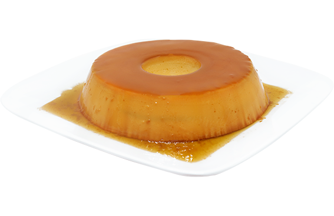

Pudim de leite condensado
Ingrdientes
- Pudim
- 1 Lata de leite condensado
- 3 ovos inteiros
- Calda
- 1 Xícara(chá)de açúcar
Modo de preparo
- Pudim
- Primeiro, bata bem os ovos no kliquidificador
- Acrescente o leite condensado e o leite, e bata novamente
- Calda
- Derreta o açúcar na panela até fica moreno, acrescenta a água e deixe engrossar
- Coloque em uma forma redonda e despeje a massa do pudim por cima
- Asse em forno médiopor 45 minutos, com a assadeira redonda dentro de uma maior com água
- Espete com garfo para ver se está bem assado
- Deixe esfriar e desforme